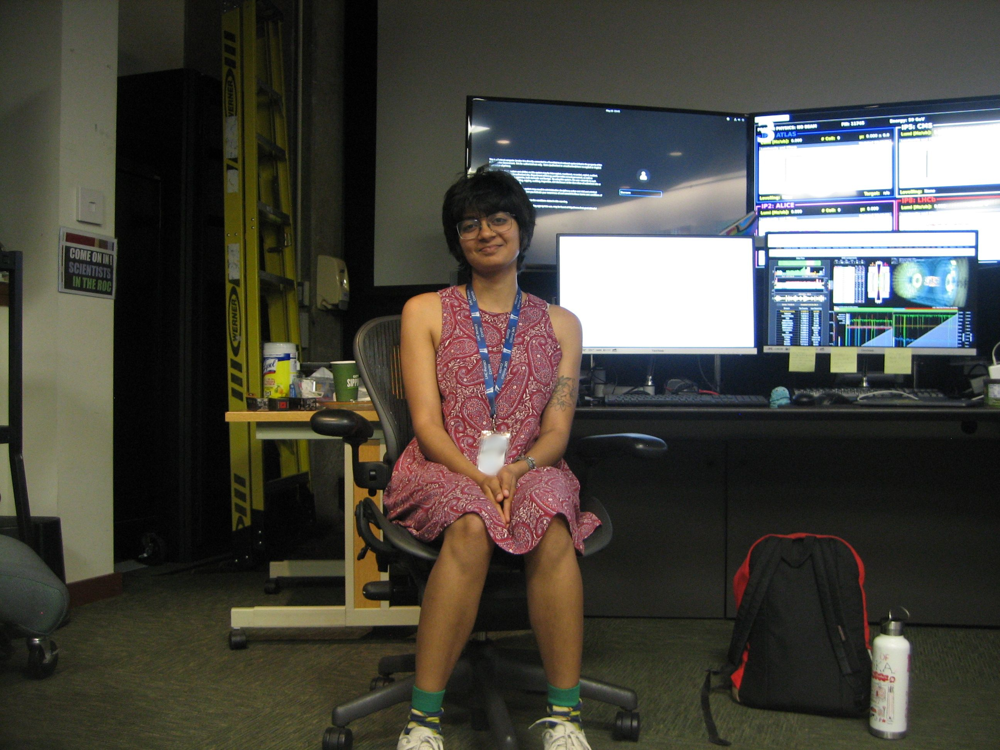

Hello :) I am currently a graduate student working under Dr. Ken Bloom in the Department of Physics and Astronomy at the University of Nebraska-Lincoln. I am a part of the Compact Muon Solenoid (CMS) experiment at CERN's Large Hadron Collider . The Higgs Boson was the final 'missing piece' in the Standard Model of Particle Physics . However, its discovery by CERN in 2012 still leaves many questions unanswered about the nature of our universe.
Curiosity is an intrinsically human trait. The project of understanding the nature of the universe around us is one of the oldest, most ambitious undertakings of humankind. My research joins the efforts experimental particle physicists around the world in the quest to understand the most basic building blocks of our universe better. I am currently working on studying top quarks through an effective field theory framework. I enjoy studying and making use of newer methods and modernizing physics analyses. I am also a part of the CMS Production and Reprocessing team.
Before coming to Nebraska, I completed my undergraduate degree at Washington College, Maryland. I grew up in the Indian city of Bengaluru, Karnataka.